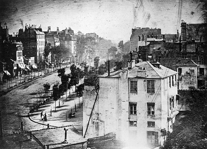

THEORY BEYOND THE CODES
The View of a Boulevard in Paris
Ralph E. Melcher

The subject of one of Louis Daguerre's first photographic images is a View of the Boulevard du Temple, Paris, c. 1839.
Jose Arguelles died a couple of weeks ago. Along with Terence McKenna, Jose was a leading revolutionary in the realm of temporal politics. His vision of art and culture led him to explore the convoluted mathematical links between symbols in the Mayan Calendar, the hexagrams of the I Ching and the structure of DNA. Out of this exploration and the deep psychedelic visions of an artist and born trickster came the art 'event' that began as an email networking list and evolved into a major media event in the late eighties: Harmonic Convergence.
During the same period, following a slightly different trajectory, Terence McKenna wove together the synchronies of the I Ching with intricate mathematical constructs that mapped the occurrences of 'novelty' throughout history in a fractal image that he called the 'Timewave.' Both Jose and Terence saw their missions as offering radical challenges to our conventional conceptions time. While Jose launched an assault on the Gregorian calendar, which he felt was a dangerously artificial construct at dissonance with the orders of nature, Terence saw time itself as a medium of perception that moved inexorably toward ultimate convergence at a moment that he referred to as the 'transcendental object.'
I knew both of these men at different periods in my life. They were opposites in nature, Jose being the romantic visionary believer and Terence a curious mixture of mystic provocateur and radical skeptic. I couldn't fully embrace their visions, but both of them brought me around again and again to questioning my own experiences involving time and the unfolding of perception.
We speak of time as 'passing' as if it were the scenery we watch out of a train window or else something that flows toward or away from a particular destination. Language and art are methods we use to encapsulate time and to construct the house that we inhabit and call 'reality.' With the tools of word and image we build our civilizations.
Text flowing across the page captures the flow of time as a chain of symbols that 'stand for' sounds. When assembled in longer chains these stand for concepts, and these act as a screen that filters our every perception of the universe as it exists.
Through text we 'interpret' reality, and in civilizations built from text power and authority is held by a priesthood of politicians, statesmen and those who do business. In any given period the various perceptual interpretations become dominant largely through the direct or indirect application of force. So religions and nations are created, as are the wars that rage along their borders.
Reality as filtered through text is experienced as fragmented and linear. Removed from the context of nature where time is experienced as flow, the world of textual time passes as the hands of a clock, segmented into a number of tasks accomplished within arbitrary intervals: the number of words per minute, the number of stars in the heavens, the number of angels on the head of a pin. Thinking is distilled into orders of logic while the life of the mind is steadily divorced from our immediate experience in the realm of sense. As the world of art is separated from the world of utility, so our being is divided against itself, leading to the monstrous crimes that humans commit against nature and each other.
In a world built from text the artist acts against the barrier symbolic language erects between thought and direct experience. Using artifact, image and word, the goal of the artist is to trick or to urge the mind into an alternative experience of time. Sensory elements are arranged with the intent to subvert our sense of time perceived as the logical progression of routinized task intervals, and this might release us from the bonds of artificial time into a potential for direct experience. Old habits may be broken.
When in 1838 an alchemist/scientist/inventor named Louis Daguerre displayed the first examples of a process that combined the light of the sun, the silver of the moon and the vapors of mercury to produce the earliest photographs, civilization crossed the threshold into an entirely new relationship with time. In the moment that generated the first photographic image a door was opened between worlds. A parallel universe of captured time began to flood across the boundaries erected by a language of written symbols. With the exponential accumulation of images since the time when silver nitrates on metal plates were exposed to light and mercurial gases, to today's unlimited digital replication, the realm of imagination has risen like a flood that now threatens everything that civilization once accepted as true.
Our relation to the image is both more direct and more complex than our relation to script. Whereas the written word reveals its meanings through a structured progression of symbols, the image invades our consciousness through an instantaneous confluence in which the present meets the past, the moment of perception merges with the moment of capture and the content of memory is activated through a release of emotion. The image itself is an artifact of both action and emotion, which can be seen as the defining elements of our perception of time.
As our moments recede into the past their content becomes myth. In the photograph a moment is converted instantly to myth. The photograph is myth given shape. We all now live in an endless castle whose walls are plastered with layer upon layer of myth.
We live in a moment when all of time and space, past, present and future bleeds into the present through the revelations of image. Single images provoke massive revolutions. Governments are overthrown by the acts of individuals captured in pictures and replicated endlessly across borders. Images are magical talismans that summon collective emotions and reshape the public conscience. Our understanding is shallow. Even the wizards of media and myth can't often predict what will act as a trigger for massive change.
The world is in a state of constant war. The oceanic realm of image and myth traps us in a plane of perception referred to by mystics as the 'astral,' where wild and massive spirits roam on the currents of imagination and dream, shaped and reshaped in rough winds that sweep the blind borders between emotion and reason. Arising out of universal codes that transcend all familiar borders of language and nation, the digital image sweeps us all into chaotic struggles where opposing powers draw to themselves the cloaks of our projected desires and like sorcerers try to reshape our dreams. In such a world all of us who contribute to the discourse are in effect, sorcerers.
In a world made of dreams people are united in their quest for freedom and we who watch are inspired by their courage. In other precincts too many of us live in shadows where people strive alone for personal attention in order to fill a void inside of themselves. In a society that has lost its moorings the attention we receive can lead to a deeper sense of alienation or else to affiliation with spirits that thrive on lust, fear and hatred. One can survey the Internet to find plenty of evidence to fulfill Yeat's vision where, "...The blood-dimmed tide is loosed, and everywhere...the ceremony of innocence is drowned..." For good reasons the ancient mystics offered caution to those who would enter the astral realm, and yet after almost two centuries of war and technological revolution every one of us is immersed in it.
We are growing more sophisticated in our understanding of the language of images and perhaps less susceptible to their ability to alienate us from our own experience. Our most important challenge in this post-historic age is to understand that language more fully.
Neither Jose Arguelles or Terence McKenna lived to see whether their theories about time would ever be tested or confirmed. They presumed to have uncovered maps that pointed us either toward doom or revelation and tried to break us from the trance where we watch helplessly as society plunges forward while plagues of fear emerge out of the growing dissonance. Many are caught in the tides of the imaginary and brought to despair, confusion and self loathing. Others become victims of impossible inflation turned into ego-lust and greed. We grow terrified of each other.
Opposing all of this are acts of subversion by the prophets of conscious revolution while we grow more sophisticated in our understanding of the language of time itself. Many of us are gazing through the veils of the image so that we may perceive the real world beneath the projected dream. Many of us, through the shock of change itself, are breaking out of the collective trance. Yet, there are no maps that can guide us out of this wonderland. Each of us can only try to distinguish the life around us from the continually fading text and image of the dream.
Time flows neither forward or back. It's only what we experience in the present that's real. We all hope for a better future, yet hope itself is a projection that can lead us into delusion. Like Daguerre's image of a street in Paris, all images fade in time. Perhaps our image of the future can pull us toward what we wish. This is the work of magic, that is, of will channelled through imagination. The key to working the magic of the image is in our ability to let it go, and better than hope is the power of clear intention.
----------------
Ralph Melcher is an essayist and poet living in Santa Fe, New Mexico. His work has appeared in Fish Drum Magazine, Annals of the Earth, Salon, EMagazine and CTheory. He has worked as book editor, publisher and grocer and he travels in archetypal realms involving deep psychology, film and digital media.
(c) CTheory. All rights reserved.